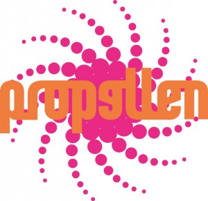

Seminar og laboratorier med Propellen (TRONDHEIM)
- Dato:
- 08.02.2013 til 10.02.2013
- Start kl :
- 19:00
- Slutt kl :
- 21:00
- Adresse:
- Nonnegata 19, 7014 Trondheim, TRONDHEIM
 Samtale + fem praktiske laboratorium under headingen:
{kind=link}
Er dette dramatikk for barn og unge?
Propellen Teater og Norsk Skuespillersenter arrangerer samtaler og verksteder i Trondheim under headingen "Er dette dramatikk for barn og unge?" Samlingen og verkstedene inngår i en treårig satsning på prosjekter og undersøkelser rettet mot barn og unge. Satsningen ender i en større scenetekstfestival i 2014.
Dag 1 blir det en faglig samling i Propellen Teaters lokaler på Bispehaugen fra kl. 19.00. Lisa Marie Nagel fra SceSam innleder rundt aktuelle strategier og problemstillinger i deres arbeid for barn og unge. Vi utveksler erfaringer og metoder. Les mer om SceSam her.
Dag 2 og 3 tilbyr vi fem teaterskapere/teaterskapende konstellasjoner muligheten til å gjennomføre todagers laboratorier med sitt prosjekt. Hvert laboratorie får prøvelokale i én dag samt honorar til å dekke én veileder/ekspert el.l. På slutten av dag 2 blir det en visning / lesning samt oppsummering av det arbeidet som har foregått på laboratoriene.
Hvis du ønsker å søke om å få gjennomføre et laboratorie med ditt prosjekt, send en mail med beskrivelse av prosjektet og hva du ønsker å utforske til propellseminar(a)gmail.com. Frist for forslag er 1. desember.
Om Propellen Teater
Propellen Teater er en forening for fremming av ny norsk dramatikk. Propellen er en løst sammensatt organisasjon som arrangerer verksteder, seminarer og produserer forestillinger. De er nå inne i en treårig forskningsfase med fokus på dramatikk for barn og unge. I 2013 arrangerer de seminarer, workshops og lesninger blant annet i samarbeid med Norsk Skuespillersenter, Assitej, Dramatikkens Hus og SceSam. Les mer her.